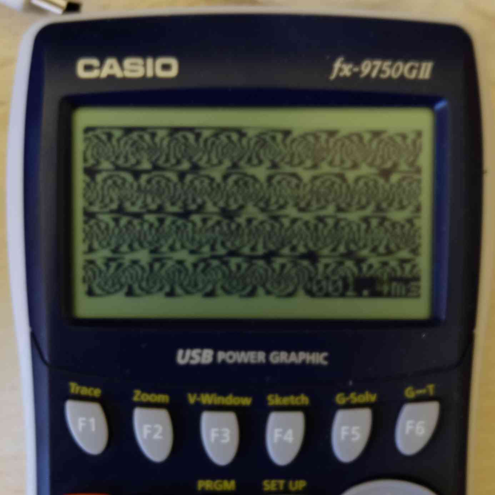

    <canvas id="c"></canvas>
    <script type="text/javascript">
      var logwidth = 7, logheight = 6;
      var width = (1<<logwidth), height = (1<<logheight);
      var scale = 4;
      var c = document.getElementById('c');
      c.width = width*scale;
      c.height = height*scale;
      var ctx = c.getContext('2d');
      var lcg = 0;
      var mul = 217, add = 3;
      var lcgmask = (1 << (logwidth+logheight))-1;
      var fill = true;
      setInterval(function () {
        for (var i = 0; i < 50; ++i) {
          var x, y;
          if (fill) {
            x = (lcg & (width-1)), y = (lcg >> logwidth);
          } else {
            y = (lcg & (height-1)), x = (lcg >> logheight);
          }
          ctx.fillRect(x*scale, y*scale, scale, scale);
          lcg = (lcg * mul + add) & lcgmask;
          if (lcg == 0) {
            fill = !fill;
            ctx.fillStyle = fill ? "black" : "white";
          }
        }
      }, 10);
      function set(m,a) {
        mul = m;
        add = a;
        ctx.clearRect(0, 0, c.width, c.height);
        lcg = 0;
        fill = true;
        ctx.fillStyle = "black";
      }
    </script>
    <div>
      choose from some different patterns: 
      <button onclick="set(217,3)">x*217+3</button>
      <button onclick="set(17,3)">x*17+3</button>
      <button onclick="set(5,7)">x*5+7</button>
    </div>
    <hr/>
    <div>
      isn't it funny how <a href="https://en.wikipedia.org/wiki/Linear_congruential_generator#Parameters_in_common_use"> linear congruential generators are commonly used to generate random numbers?</a>
    </div>
    <p>
      I also ported this to run on my graphical calculator: 
    </p>
    
